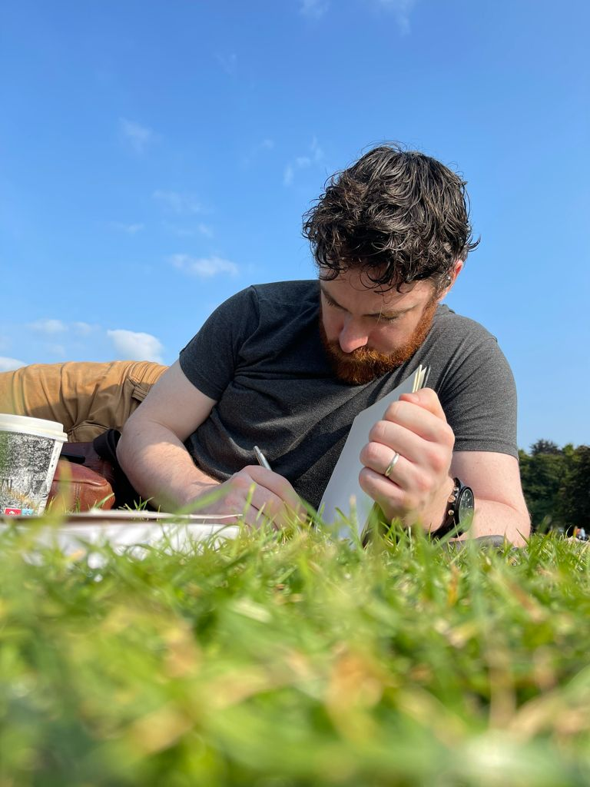

Skills

Software Development
- C#
- Python
- JavaScript
Web Development
- OpenCart
- Wordpress
- HTML / CSS / JavaScript
Graphic Design
- Photoshop / Illustrator
- FCPX / Premiere Pro / Magix Vegas
- Logos, Business Cards, Banners etc.
Photography / Film
- Landscape
- Product Video Reels
- Product Photography

Writing
- Blog Articles
- Product & Ad Copy
- Novels & Short Stories

eCommerce Management
- OpenCart
- WooCommerce
- Analytics & Optimisation